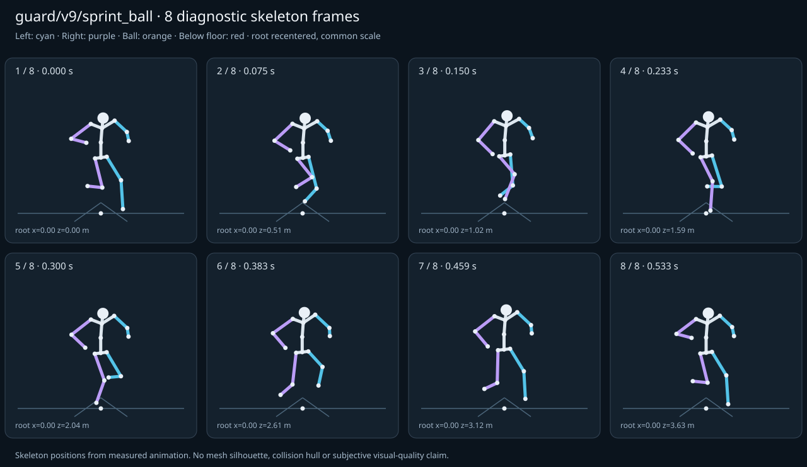

מה הוריד את הציון
- החלקת רגליים: תזוזת סוליה 0.1444 מ׳, LeftFoot, בזמן 0.1 ש׳ (אדום)
- מגע בכדור: חסרים נתוני מדידה (Tall preview ball is attached to the hand guide; no independent retargeted ball trajectory is supplied.)
- קפיצות פוזה: LeftFoot בזמן 0.0167 ש׳; קפיצת סיבוב שקולה 15.2945 מעלות ב־60Hz (צהוב)
- כניסה ויציאה מול המתנה: פער ב־יציאה מול המתנה; יחס חריגה 2.1347 (צהוב)
כיסוי: 87%. לא כל מדד חל על כל קליפ; הסטטוס והראיות מפורטים למטה.
שמונה פריימים
תצוגת שלד אבחונית שנבנתה מהפריימים הנמדדים. צד שמאל בכחול, ימין בסגול, כדור בכתום. מיקום השורש ממורכז לצפייה; מיקומו בעולם כתוב בכל פריים.

המדדים והראיות
| מדד | מצב | ערך | ציון | סף ופרטי מדידה |
|---|---|---|---|---|
| החלקת רגליים | אדום | 0.077 height ratio | 20 | {
"definition": {
"label": "החלקת רגליים",
"unit": "height ratio",
"green": 0.01,
"yellow": 0.035,
"weight": 18,
"description": "Maximum horizontal sole displacement from the first sample of each declared support window, divided by character height. Inferred support is used only when no windows were supplied."
},
"value": 0.07679,
"status": "red",
"score": 20.15,
"evidence": {
"coordinateSpace": "authored reference world (simulation-owned)",
"supportSource": "declared",
"windows": 2,
"samples": 15,
"maxDriftMeters": 0.144365,
"p95SpeedMetersPerSecond": 1.662039,
"worst": {
"bone": "LeftFoot",
"t": 0.1,
"start": 0,
"end": 0.1,
"driftMeters": 0.144365
}
}
} |
| חדירה לרצפה | ירוק | 0 height ratio | 100 | {
"definition": {
"label": "חדירה לרצפה",
"unit": "height ratio",
"green": 0.005,
"yellow": 0.02,
"weight": 15,
"description": "Maximum depth of the supplied sole probe points and all skeletal joint centers below the declared floor plane, divided by height. Sole probes are not a mesh collision audit."
},
"value": 0,
"status": "green",
"score": 100,
"evidence": {
"samples": 700,
"floorY": 0,
"probeKind": "declared sole probes plus skeletal joint centers (no mesh surfaces)",
"maxDepthMeters": 0,
"worst": {
"t": 0,
"bone": "LeftFoot",
"depthMeters": 0,
"y": 0.052181
}
}
} |
| קפיצות פוזה | צהוב | 1.889 discontinuity ratio | 62 | {
"definition": {
"label": "קפיצות פוזה",
"unit": "discontinuity ratio",
"green": 1,
"yellow": 2.5,
"weight": 18,
"description": "Maximum adjacent 60 Hz-equivalent step: root-relative marker displacement / 0.04 height, root-relative rotation / 15 degrees, or root translation / 0.08 height. A fast continuous action can also exceed this screening threshold."
},
"value": 1.888591,
"status": "yellow",
"score": 62.23,
"evidence": {
"adjacentPairs": 34,
"observations": 578,
"maxDegrees60Hz": 15.294547,
"maxMarkerStepHeight60Hz": 0.075544,
"maxRootStepHeight60Hz": 0.060284,
"worst": {
"ratio": 1.8885908253229475,
"t": 0.016667,
"previousTime": 0,
"bone": "LeftFoot",
"markerStepHeight60Hz": 0.075544,
"degrees60Hz": 0.127644
}
}
} |
| חריגות אנטומיות | ירוק | 0 % affected frames | 100 | {
"definition": {
"label": "חריגות אנטומיות",
"unit": "% affected frames",
"green": 0.5,
"yellow": 3,
"weight": 14,
"description": "Percentage of frames with elbow or knee flexion above 165 degrees, neck bend above 80 degrees, or a segment length changing by more than 5%. Optional calibrated hinge checks detect reverse knee flexion above 8 degrees. Conservative marker limits do not diagnose axial joint twist."
},
"value": 0,
"status": "green",
"score": 100,
"evidence": {
"testedFrames": 35,
"affectedFrames": 0,
"checks": 595,
"maxLimbFlexionDegrees": 128.663305,
"maxRelativeSegmentLengthChange": 0,
"hingeDirectionChecked": true,
"axialTwistChecked": false,
"violations": []
}
} |
| מגע בכדור | אין די נתונים | — height ratio | — | {
"definition": {
"label": "מגע בכדור",
"unit": "height ratio",
"green": 0.015,
"yellow": 0.05,
"weight": 13,
"description": "Maximum absolute distance from the ball surface to the sampled, bone-transformed declared contact point, divided by height. Events are evaluated at their exact declared times by interpolation."
},
"value": null,
"status": "insufficient-data",
"score": null,
"reason": "Tall preview ball is attached to the hand guide; no independent retargeted ball trajectory is supplied.",
"evidence": {
"independentTrajectoryAvailable": false
}
} |
| כניסה ויציאה מול המתנה | צהוב | 2.135 continuity ratio | 63 | {
"definition": {
"label": "כניסה ויציאה מול המתנה",
"unit": "continuity ratio",
"green": 1,
"yellow": 3,
"weight": 10,
"description": "Worst entry/exit mismatch to the best matching idle phase: RMS marker error / 0.04 height, RMS bone rotation / 25 degrees, or RMS endpoint velocity error / 0.75 height per second. Horizontal root translation is aligned; root height and body pose remain measurable."
},
"value": 2.134741,
"status": "yellow",
"score": 62.98,
"evidence": {
"entry": {
"ratio": 2.1347409075161226,
"t": 0,
"idleTime": 1.3,
"markers": 17,
"rmsPositionHeight": 0.08539,
"rmsRotationDegrees": 52.072111,
"rmsVelocityHeightPerSecond": 1.322676,
"velocityEvaluated": true
},
"exit": {
"ratio": 2.134740907586485,
"t": 0.533333,
"idleTime": 1.3,
"markers": 17,
"rmsPositionHeight": 0.08539,
"rmsRotationDegrees": 52.072111,
"rmsVelocityHeightPerSecond": 0.725115,
"velocityEvaluated": true
},
"worstEndpoint": "exit",
"alignment": "horizontal root translation; raw asset poses used when provided"
}
} |
| מהירות גוף מול צעדים | ירוק | 0.175 relative speed error | 82 | {
"definition": {
"label": "מהירות גוף מול צעדים",
"unit": "relative speed error",
"green": 0.2,
"yellow": 0.5,
"weight": 8,
"description": "Relative difference between average root travel speed and the median backward support-foot sweep speed relative to the root. Cadence and implied stride lengths are also reported. In-place clips need an explicit reference travel scenario; stationary actions are not scored as locomotion."
},
"value": 0.175114,
"status": "green",
"score": 82.49,
"evidence": {
"rootSource": "sampled presented root",
"rootSpeedMetersPerSecond": 6.8,
"observedRootSpeedMetersPerSecond": 6.8,
"referenceRootSpeedMetersPerSecond": 6.8,
"supportSource": "declared",
"backwardSweepSpeedMetersPerSecond": 8.243567,
"cadenceStepsPerSecond": 3.75,
"impliedStrideMeters": 4.396569,
"rootStrideMeters": 3.626667,
"supportSweeps": [
{
"bone": "LeftFoot",
"start": 0,
"end": 0.1,
"duration": 0.1,
"sweepMeters": 0.824357,
"speedMetersPerSecond": 8.243567
},
{
"bone": "RightFoot",
"start": 0.266667,
"end": 0.366667,
"duration": 0.1,
"sweepMeters": 0.82322,
"speedMetersPerSecond": 8.2322
}
]
}
} |
| סימטריה | ירוק | 0.002 relative mismatch | 99 | {
"definition": {
"label": "סימטריה",
"unit": "relative mismatch",
"green": 0.03,
"yellow": 0.1,
"weight": 4,
"description": "Maximum bilateral segment-length mismatch. Looping locomotion additionally compares reflected half-cycle leg markers; explicit pose symmetry compares simultaneous bilateral markers. One-sided actions retain unscored motion diagnostics, so a valid kick or dribble arm is not penalized for intentional asymmetry."
},
"value": 0.00196,
"status": "green",
"score": 98.69,
"evidence": {
"mode": "gait",
"modeSource": "looping locomotion id rule; legs only",
"structuralMismatch": 0,
"segments": [
{
"segment": "Arm-ForeArm",
"mismatch": 0
},
{
"segment": "ForeArm-Hand",
"mismatch": 0
},
{
"segment": "UpLeg-Leg",
"mismatch": 0
},
{
"segment": "Leg-Foot",
"mismatch": 0
}
],
"motionRmsHeight": 0.00196,
"worstMotion": {
"t": 0.133333,
"errorHeight": 0.003193
},
"bilateralPoseRmsHeightUnscored": 0.158933,
"note": "Motion is mirrored in a pelvis-centred body basis."
}
} |